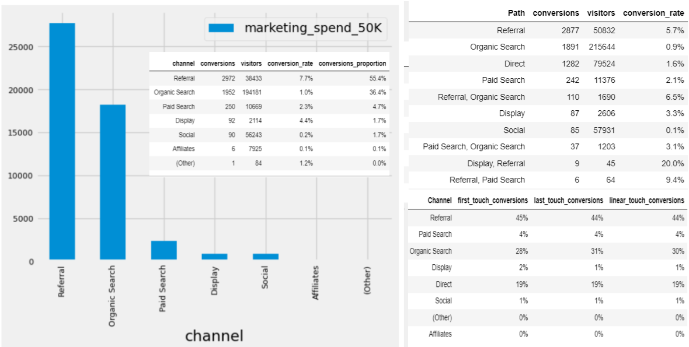

Digital marketing companies struggle to maximize conversions. One of the biggest challenges that digital marketers face is budget allocation. With so many different channels and campaigns to choose from, it can be difficult to know where to put their money. This is where channel proportion and channel path analysis using attribution models can help.
Channel proportion is a simpler attribution model that assigns credit to each channel based on the number of times the channel was touched in the customer journey.
Channel path is a more complex attribution model that assigns credit to each channel based on the order in which the channels were touched in the customer journey.
Scenario - If a user visits through a Paid search ad, then clicks on an Social ad to return to the website and make a conversion
Channel proportion - Paid search ad would be assigned 50% of the credit for the conversion and the social marketing channel would be assigned 50% of the credit
Channel path (First touch) - Paid search ad would be assigned 100% of the credit for the conversion because it was the first channel that the customer touched
Channel path (Last touch) - Social would be assigned 100% of the credit for the conversion because it was the last channel that the customer used for conversion
Channel path (Linear touch) - Paid search would be assigned 50% and Social would be assigned 50% of the credit for the conversion because both channel lead to a conversion

Best attribution model will depend on the specific business goals and needs. However, by understanding the different attribution models and how to use them, we can gain valuable insights into the customer journey and make more informed decisions about how to allocate the digital marketing budget.